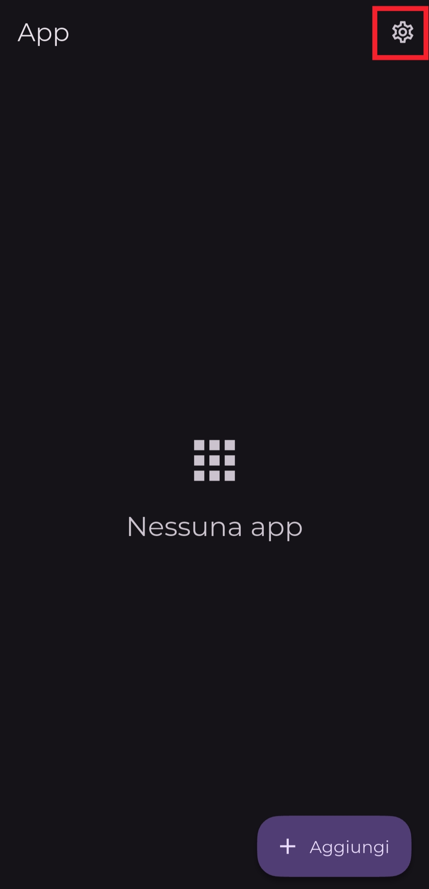
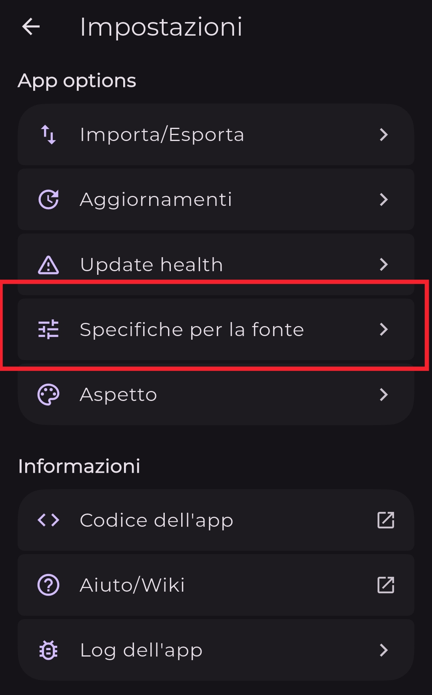
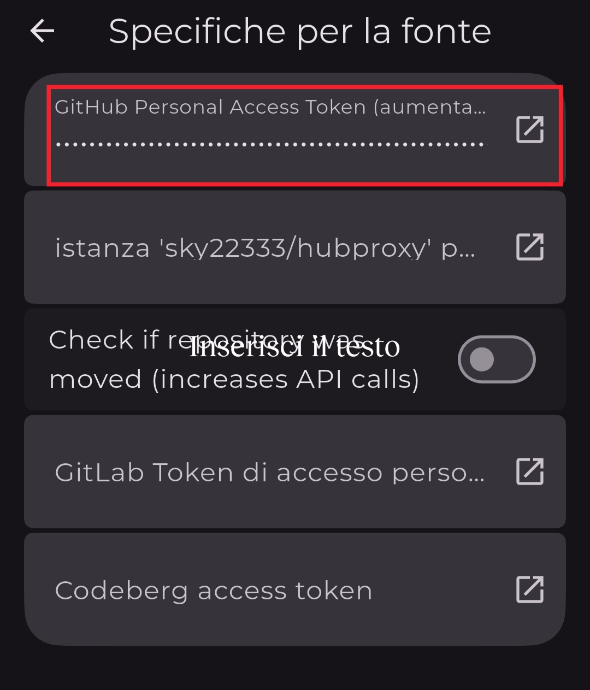

Installazione e configurazione
- Scarica e installa Obtainium aprendo il file scaricato da QUI
- Aprire Obtanium e andare nelle Impostazioni
- Cliccare su "Specifiche per la fonte"
- Incollare il numero univoco che ti ho inviato sul campo "GitHub Personal Access Token"
Immagini guida



Aggiunta delle app